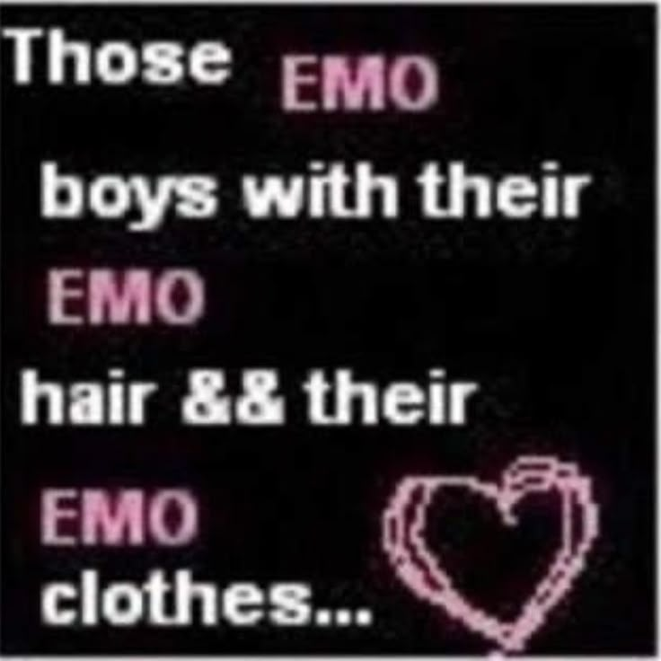
...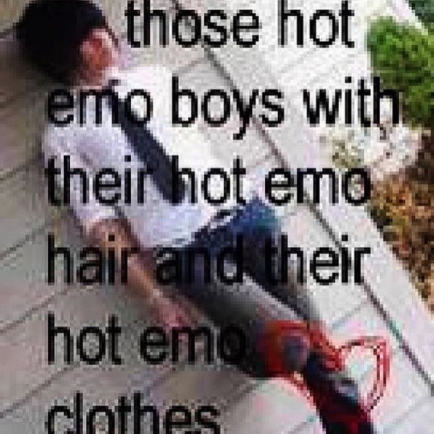
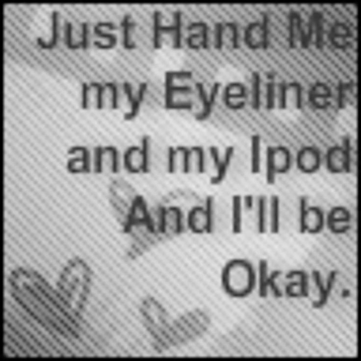
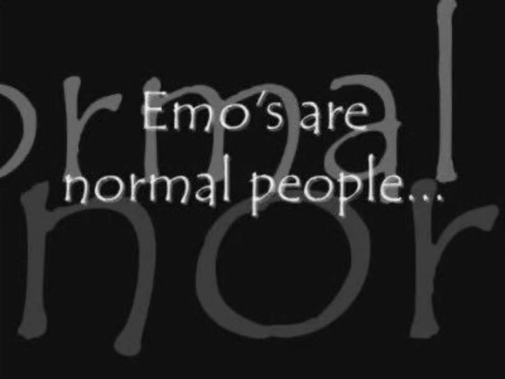
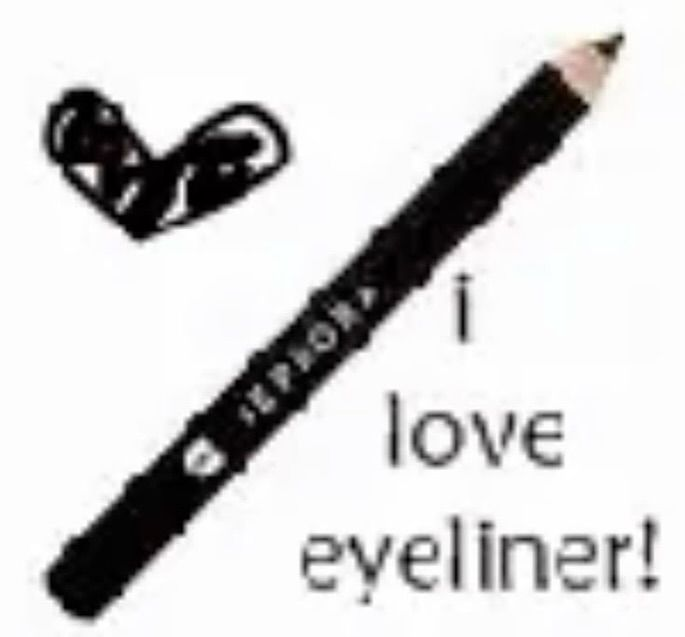
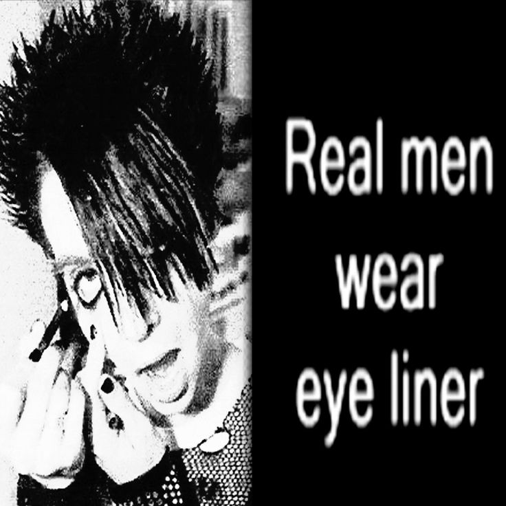
1
이모란
무엇인가?
이모(Emo)는 "Emotional Hardcore(이모코어)"의 줄임말이다. 1980년대 미국 하드코어 펑크 씬에서 파생된 음악 장르이자 하위문화 운동으로, 격렬한 연주 위에 개인의 내면, 상실, 정체성에 대한 솔직한 감정을 얹는 것이 핵심이다.
"이모(Emo)"라는 단어의 기원은 정확히 알 수 없다. 한 공연에서 관중이 "너네 완전 이모잖아!"라고 외친 것이 시초라는 설과, 음악 잡지 Thrasher가 당시 "새로운 D.C. 사운드"를 묘사하며 썼다는 설이 있다. 분명한 것은, 이 단어를 처음 들은 뮤지션들 대부분이 이 명칭을 거부했다는 점이다.
Rites of Spring은 자신들과 이모 장르의 연관성을 부정했고, 이언 매케이(Ian MacKaye)는 "이모코어는 내가 평생 들어본 것 중 가장 멍청한 말이다. '감정적 하드코어'라니 — 마치 하드코어가 처음부터 감정적이지 않았던 것처럼"이라고 말했다.
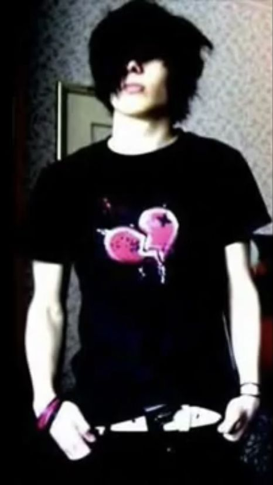
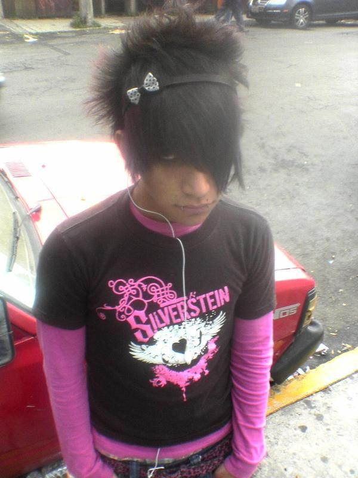
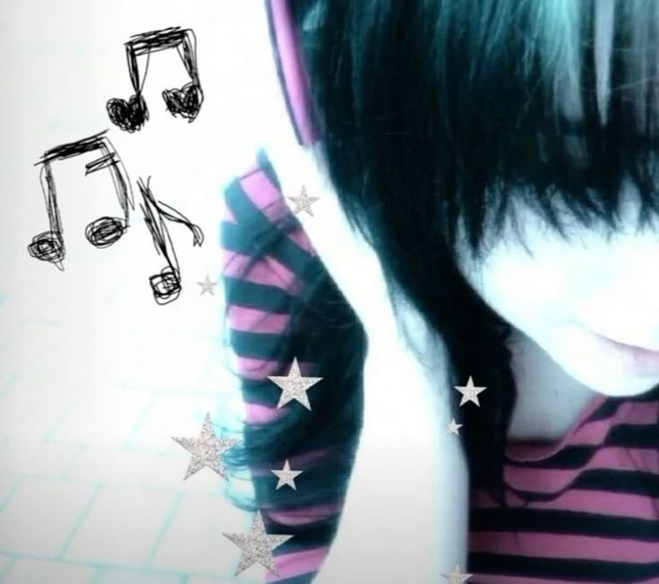
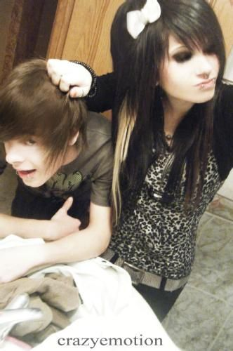
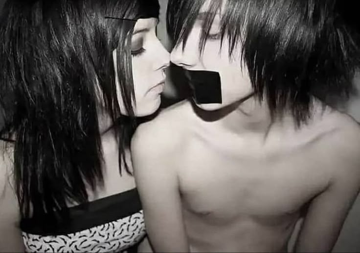
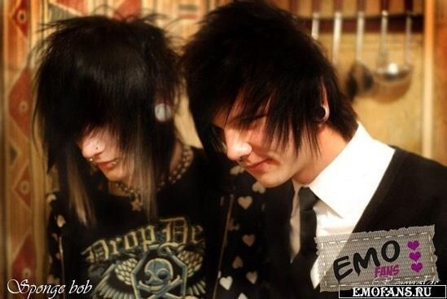
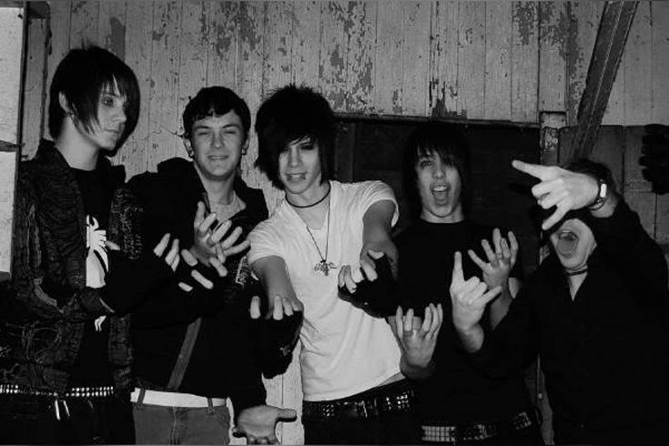
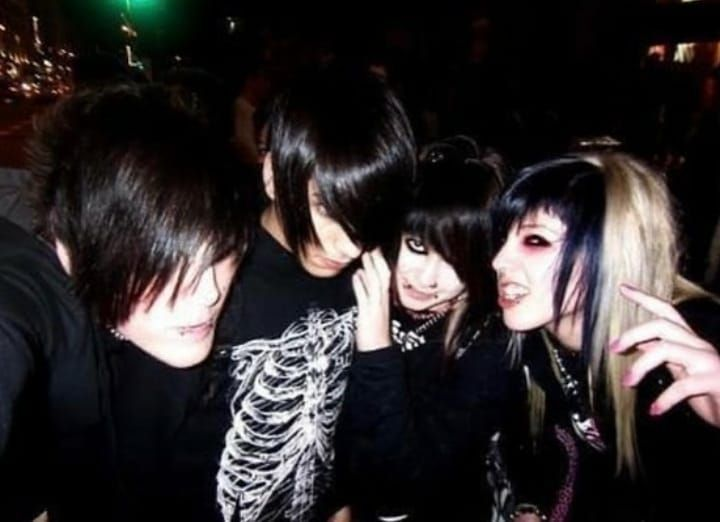
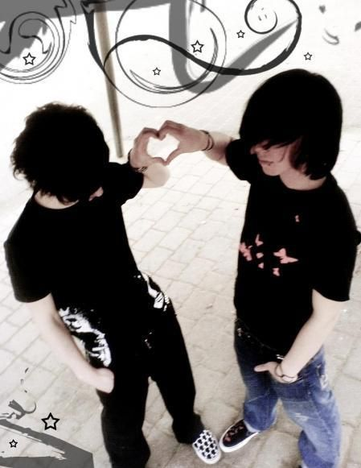
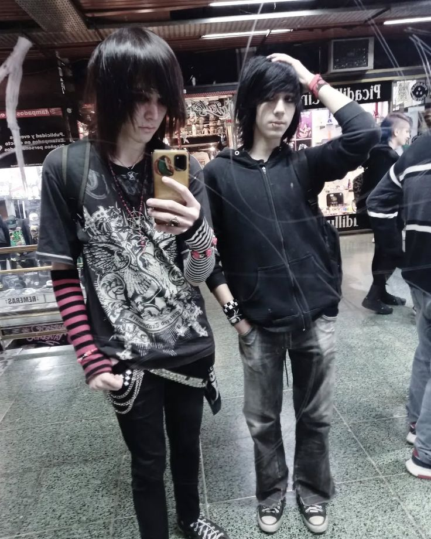
이모의 가치관
감정의 정직함
감정의 정직함 (Emotional Honesty) 슬픔, 분노, 취약함을 공개적으로 드러내는 것을 지향한다. 특히 남성이 감정을 표현하는 것을 금기시하던 사회 규범에 저항한 문화다.DIY 정신
대형 레이블보다 독립 레이블, 자체 제작 투어, 손으로 만든 진(Zine)을 선호하는 반상업주의. 커뮤니티가 음악보다 먼저다. Fugazi는 오직 전연령 공연만 했고, 입장료를 $5로 고수하며 절대 메이저 레이블과 계약하지 않았다. Washington Post는 1993년 "이 밴드에 대해 세 가지 사실을 알아야 한다: 신분증 확인이 없는 공연만 한다. 항상 $5의 입장료를 받는다. 절대로 메이저 레이블과 계약하지 않는다"고 썼다.포용성
2000년대 이모 씬은 "아웃사이더"들의 피난처였다. 학교에서 겉도는 10대들이 공연장에서 처음으로 소속감을 경험했다.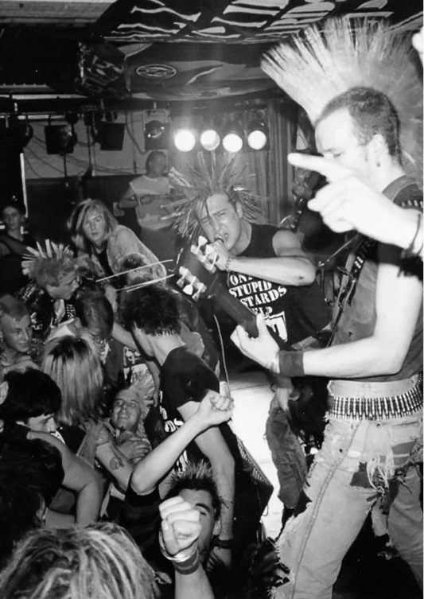
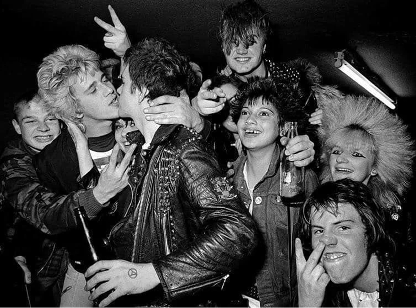
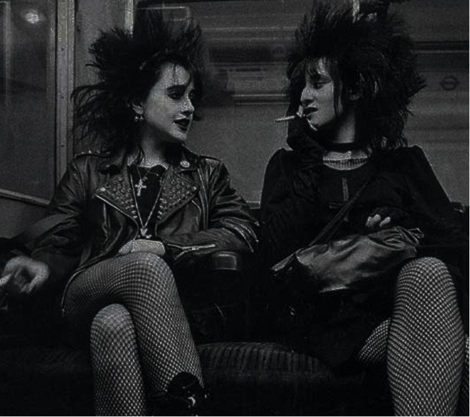
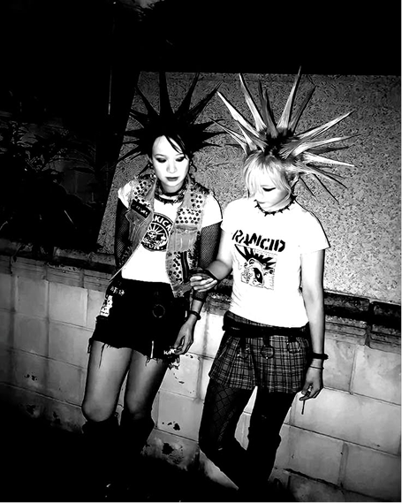
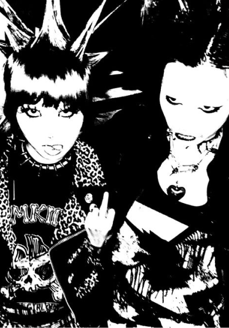
펑크에서
이모로
1970년대 펑크는 분명한 적이 있었다. 국가, 자본, 기성 세대, 주류 문화. 1977년 섹스 피스톨즈는 영국 왕실과 정부 체제를 공격하는 곡을 발표했고, BBC는 이를 방송 금지했다. 클래시의 가사는 노동자 계급의 분노를 대변했다. 반항의 방향은 언제나 바깥을 향했다.
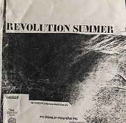
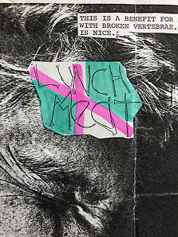
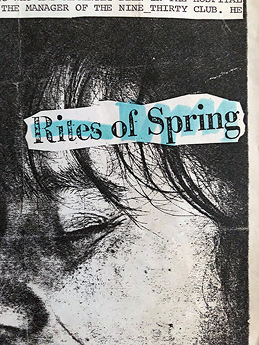
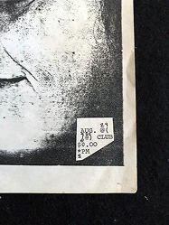
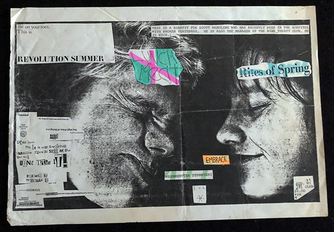
1980년대 초 미국의 하드코어 씬(블랙 플래그, 마이너 스렛, 배드 브레인즈)은 펑크의 에너지를 더욱 압축했다. 더 빠르고, 더 시끄럽고, 더 공격적이었다. 그런데 1980년대 중반, 이 씬은 내부에서 무너지기 시작했다.
워싱턴 D.C.의 하드코어 씬은 폭력의 온상이 되어 있었다. 과도한 마초 문화와 인종차별적 스킨헤드들이 공연장에서 싸움을 벌이는 일이 잦았고, 이로 인해 많은 사람들, 특히 여성들이 씬에서 소외됐다. Dischord Records에서 일하던 에이미 피커링(Amy Pickering)은 1985년 여름 지역 공연 포스터에 "Revolution Summer"라는 슬로건을 붙이기 시작했다. 원래는 직장 상사에 대한 농담에서 시작된 표현이었지만, 씬을 재활성화하고 폭력과 독성적 남성성을 해체하자는 운동의 이름이 됐다.
이 위기 속에서 일군의 뮤지션들이 질문을 던지기 시작했다.
"공격성을 외부로만 향하는 것, 그게 진짜 정직한 건가?"
터닝포인트
1983년 말 워싱턴 D.C.에서 결성된 Rites of Spring이 Revolution Summer의 핵심 밴드로 등장했다. 보컬 가이 피치아토(Guy Picciotto)는 하드코어의 공격적 에너지를 유지하면서도 가사는 완전히 개인적인 영역으로 들어갔다. 실연, 상실, 자기 자신과의 갈등. 밴드는 D.C. 지역에서 약 15회의 공연만 했지만, 그 공연들은 전설이 됐다. 관중들이 공연을 보며 눈물을 흘렸다는 이야기가 씬 안에서 전해졌고, 이것은 하드코어 씬에서 유례없는 일이었다.
이것이 핵심이다. 펑크가 사회를 공격했다면, 이모는 자기 자신을 직면했다. 반항의 에너지는 그대로인데, 총구의 방향이 바뀐 것이다.
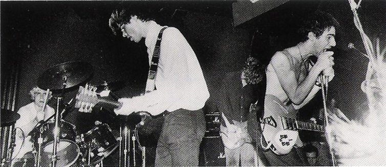
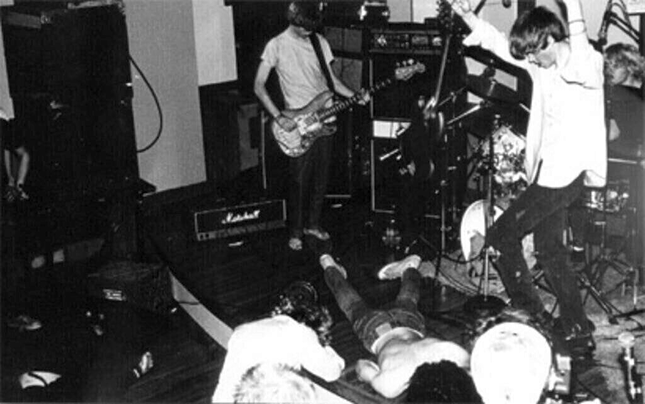
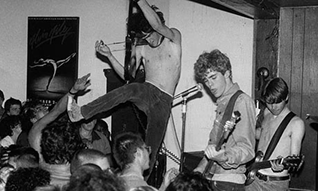
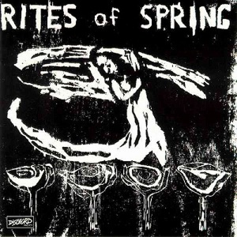